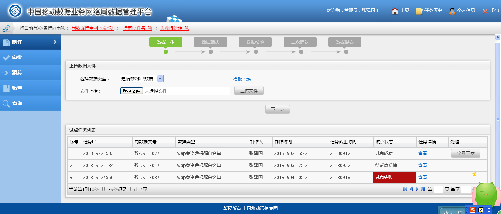
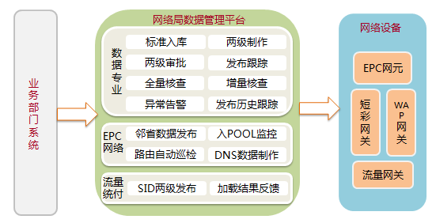
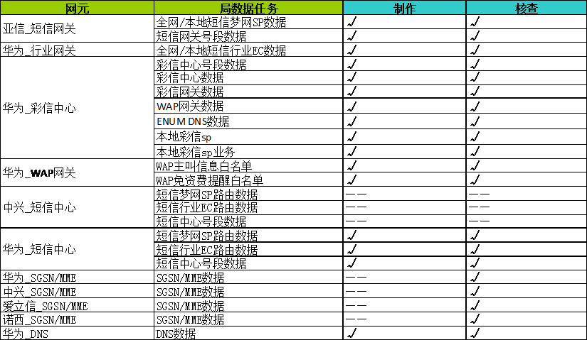

局数据管理能力
一、产品定义
网络局数据管理平台是一套针对全网网络设备关键业务数据进行自动发布、自动核查的一套智能管理系统。由集团网络部统一规划，全网各省统一部署使用。一期已完成对数据专业局数据（号段、短信、彩信、WAP数据）的两级发布与核查管理；二期已完成对EPC核心网DNS设备路由数据的自 动核查制作功能。

二、应用场景
场景一：数据专业局数据两级发布核查
当有梦网短信、行业短信、彩信、号段等业务数据需要申请入网或变更时；集团网络部或各省网管中心管理员通过NDMP平台完成对网络设备的自动发布、核查；以及数据发布加载结果与过程的跟踪；替代原有人工处理过程。
场景二：EPC网络DNS数据自动核查制作
各省网管中心对EPC核心网的MME/SGSN设备路由参数进行增、删、改操作；省管理员通过登录平台完成EPC网络DNS数据的自动巡检，并且覆盖更新DNS设备路由数据。总部管理员对全网DNS数据文件匹配度进行监控。
三、产品特性
- 两级网络结构，全网统一版本部署；
- 一套标准规范兼容全网设备厂商，接口联调只需覆盖厂商即可，不需要每个省单独联调；节省人工成本、利于快速 3、 各类局数据智能拆分发布；EPC网络DNS数据智能采集拼装。
四、产品功能
- 1.全网局数据标准化校验；
- 2.全量标准数据可查，全量标准数据变迁历史可追踪；
- 3.全网局数据发布过程与发布结果可跟踪；
- 4.两级局数据任务发布处理提醒；数据发布异常告警；
- 5.全网设备局数据一致性定期核查；提供差异数据分析报表；
- 6.EPC网络DNS数据智能采集、拼装；按各省格式生成标准DNS数据文件；
- 7.全网DNS文件匹配都监控，文件覆盖该值判断；
- 8.全网DNS路由数据、设备入POOL率情况统计；

五、技术参数
- 数据专业已纳入管理的数据类型为17类、设备类型为5类，全网覆盖的设备数量为450台左右；
- EPC网络DNS数据已纳入管理的设备类型为3类，试点省管理设备数量约260台；
- 系统管理的数据量约500万条记录；目前平均每周数据发布量为3批次；完成一次数据全量核查时间约30分钟
- EPC网络DNS数据全量设备巡检一次时间30分钟，可每天巡检3次。

六、产品优势
- 兼容数据专业所以数据规范，满足数据专业所有网关设备局数据接口要求；
- 全网统一版本、两级网络接口、各省驻点维护，便于版本快速上线，功能改造成本低。
- 复用MISC网络优势，与各类网关设备天然具备网络连接；
七、应用情况
- NDMP一期数据专业局数据工程已在全网31省+总部部署上线，目前已正常接入业务使用的省份有22省；其中使用效果最好的省份为江苏、江西、河南、四川等省。
- NDMP二期项目EPC网络DNS专业已与2016年5月完成在江苏、四川、江西的试点，并投入使用；目前已启动对内蒙古、福建、广西、安徽、湖南、湖北、上海等省份进行扩大试点。
- NDMP三期已在讨论接入流量统付SID数据、行业政企短彩EC数据的接入方案。